How to Develop Orchestration Logic in APIs with Baker
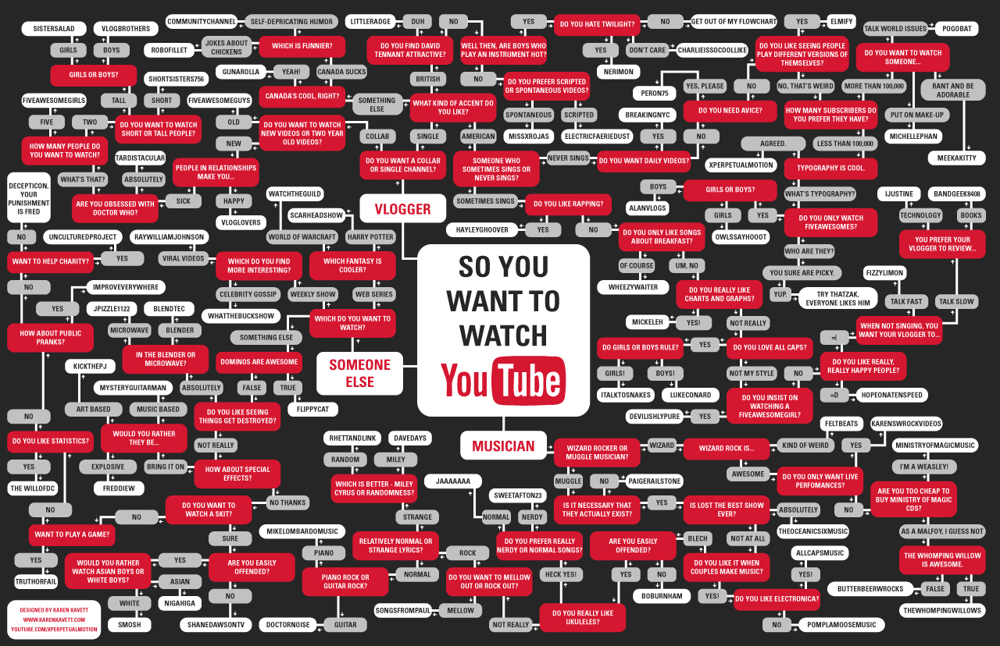
Jordy Moos
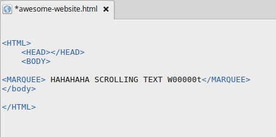
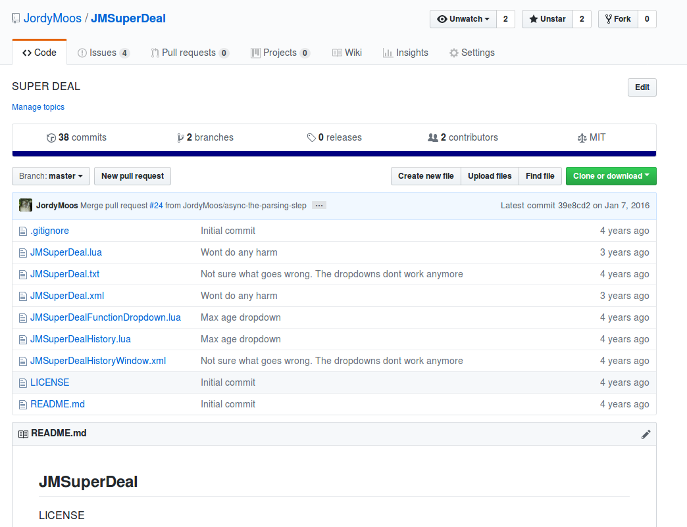
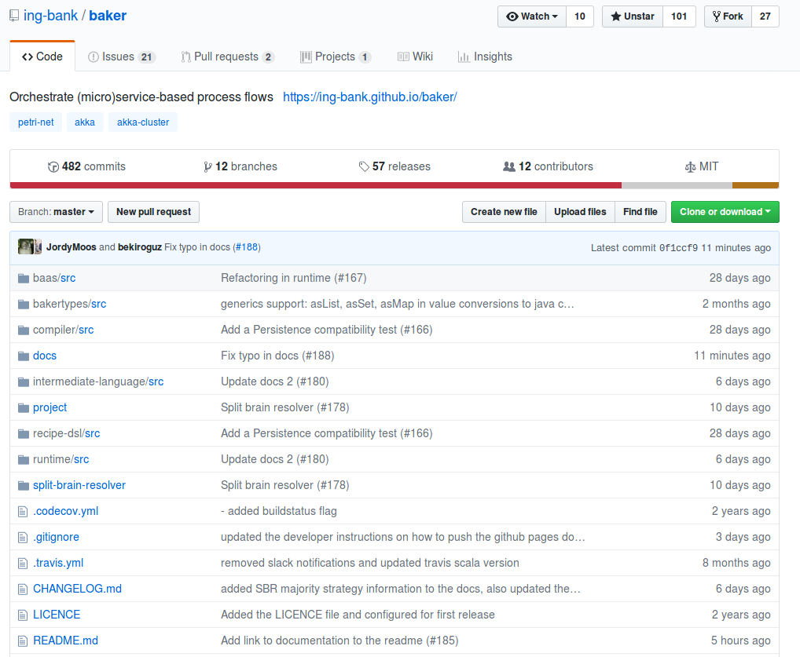


Let's meet you
Who has made an API?
Who made "Multi step" API's or process?
Who wants to make Spaghetti Bolognese for me?
Awesome Spaghetti Comp. Inc.
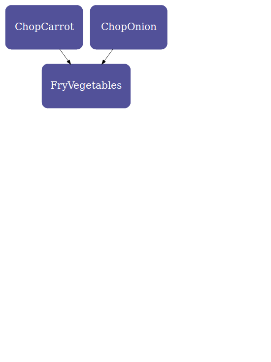
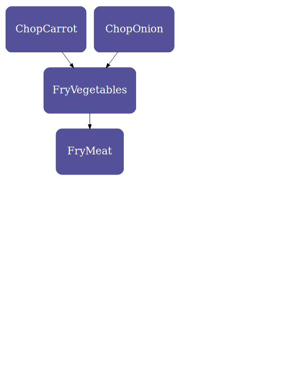
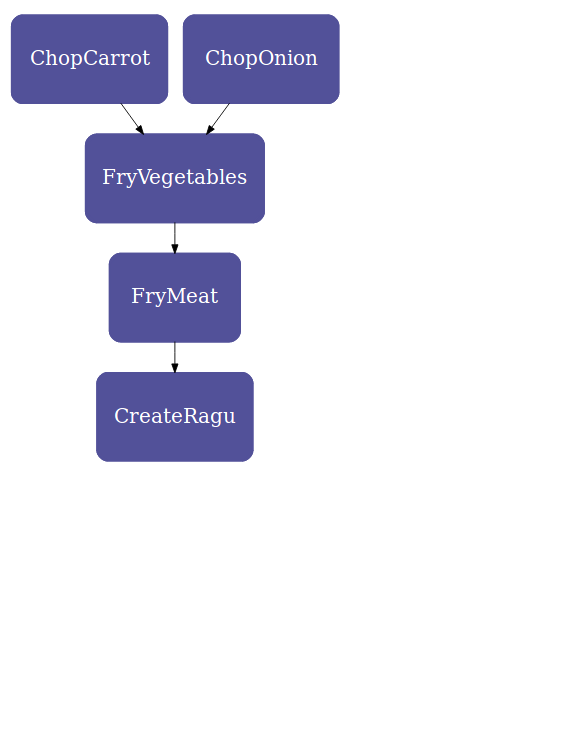
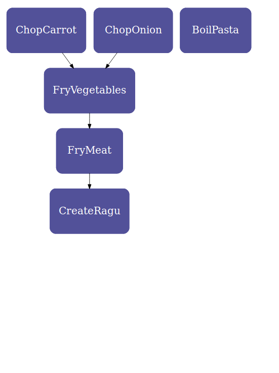
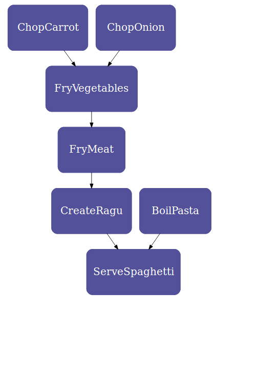
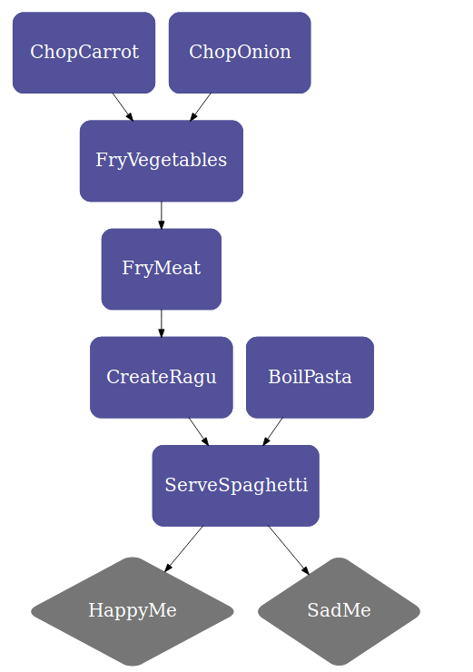
Interactions
Events
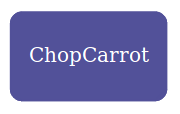
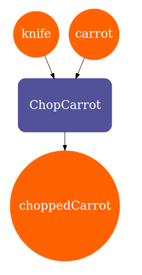
Ingredients
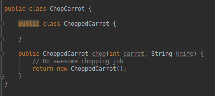
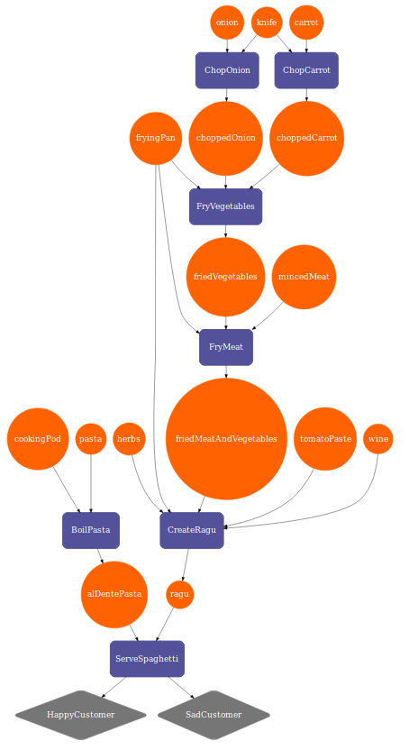
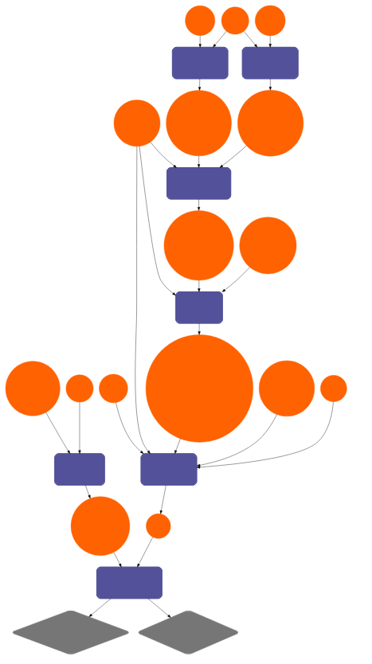
Baker
- https://cdn2.hercampus.com/styles/hcxo_standard_large/s3/hero-images/2018/10/01/Hartford-Baking-Co-19.jpg
- http://www.karenkavett.com/blogp/youtubeflowchart_final_big.jpg
- https://esosslfiles-a.akamaihd.net/cms/2016/01/3973b3075e27bbdf6731462824952b6b.jpg
- https://mtutriangle.org/assets/img/posts/Open-Source-Word-Cloud.jpg
- https://www.nasa.gov/sites/default/files/thumbnails/image/s65-55202.jpg
- https://www.parliament.nz/media/2978/crowd-with-raised-up-hands-istock.jpg
- https://www.thuisbezorgd.nl/foodwiki/uploads/2017/12/spaghetti-bolognese-1080x960.jpg
- https://cdn-image.realsimple.com/sites/default/files/styles/marquee_large_2x/public/1522180417/cooking-one-woman.jpg?itok=q32BfZyd
- https://www.yesmagazine.org/issues/affordable-housing/cooking-stirs-the-pot-for-social-change-20180627/sioux-chef-cooking.jpg/image
- https://www.brettfalcon.com/Portfolio/Conceptual/2/caption
- https://spinninrecords.com/media/cache/header_wide/uploads/media/page/0001/06/thumb_5325_page_ogimage.jpeg
- https://www.redlions.nl/wp-content/uploads/2017/03/Just-a-friendly-reminder.png
- https://industryeats.com/wp-content/uploads/2015/11/carrot-in-diced-pieces.jpg
- http://i.imgur.com/K1zhbbm.gif
- https://steemitimages.com/p/8SzwQbWfyXFcqEAwpKeHM3nTyuLgDJvVcgaZxvJSLJeWbxcmqHXEA87kbjFBLW5aeVsDvbNGvQs4HFg5gm2LjeLBLoKQwsTfqBGUaBcZkpwYEPMDJ2h?format=match&mode=fit
- https://i1.wp.com/devbasu.com/wp-content/uploads/2015/04/describe-your-ideal-boss.jpg?w=2400&ssl=1
- https://thenypost.files.wordpress.com/2015/09/mcdonalds.jpg
- https://www.techtiq.co.uk/kb/wp-content/uploads/2018/10/DIFFERENT-KINDS-OF-DEVELOPERS.png
- https://cdn.filestackcontent.com/rHXz4MARfqYkQM8odgrt
- https://static.parade.com/wp-content/uploads/2017/02/ThinkFaster-FTR.jpg
- https://herbertvanhoogdalem.nl/wp-content/uploads/2012/07/Schermafbeelding-2018-10-08-om-12.13.14.png
- https://www.ing.nl/media/ING_BB_Mobielopenen_tcm162-144525.png